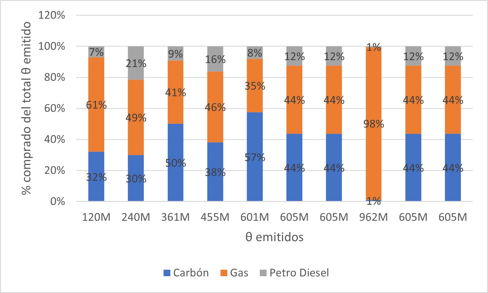
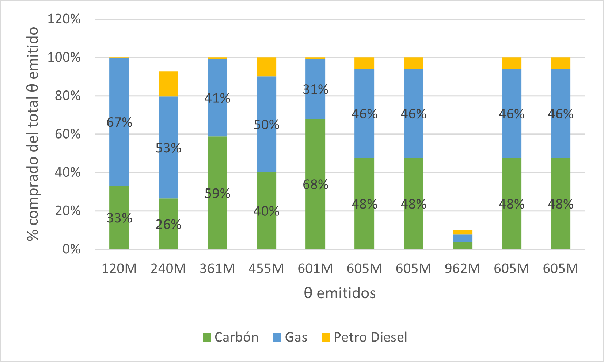

Cap-and-trade in Energy Capacity Investment when the planner is inattentive
Cea-Echenique, Feijoo and Muñoz
UAndes, PUCV
July 2023
last update 2023-07-12
(Ehrenmann and Smeers 2011; de Maere d ’ Aertrycke et al. 2017; Abada, de Maere d ’ Aertrycke, and Smeers 2017)
In the first stage period t=0,
In the second stage t\in T:=\{1,...\bar{t}\}, \omega\in\Omega
D=\left(D(0),(D(t,\omega))_{(t,\omega)\in T\times\Omega}\right)\in\mathbb{R}_+\times\mathbb{R}_+^{T\times\Omega}.
t=0, each producer i chooses
In the second stage, for each pair (t,\omega), producer i maximizes its profit by choosing
The choice set of the producer i over a time horizon of \bar{t} years is given by:
Given electricity prices \pi^d:=\left(\pi^d(0),\left(\pi^d(t,\omega)\right)_{(t,\omega)\in T\times\Omega}\right)\in\mathbb{R}_+\times\mathbb{R}_+^{T\times\Omega} and parameters (a_i,b_i)_{i\in\{1,...N\}}\in(\mathbb{R}^2_+)^N, f_i(p,q)=\Big(a_i\cdot q+\frac{b_i}{2}\cdot q^{2}\Big)-p\cdot q revenue function.
Defining T_0:=\{0\}\cup T, the optimization problem of producer i is given by choosing
\min_{(x_i,Q_i,A_i,P_i,V_i)\in \mathbb{X}} f_i \big( \pi^d(0),Q_i(0)\big)+ A_i \pi^{a} + I_i x_i(0)
+ \sum_{\omega} Pr(\omega) \Bigg[ \sum_{t>0} \frac{1}{(1+R)^t} \Big[ TC_i(t)\cdot f_i \big( \pi^d(t,\omega),Q_i(t,\omega) \big)
+ TCR_i(t) \cdot I_i\cdot x_i(t,\omega) \Big] + \pi^v(\omega)\cdot \big(P_i(\omega)-V_i(\omega)\big) \Bigg]
\Big(CF_i \cdot\tau\Big) \Bigg[\bar{Q}_i + x_i(0)+\sum_{t^{\prime}<t-lag_i} x_i(t^\prime,\omega) \Bigg] - Q_i(t,\omega) \geq 0,\forall \, i,\omega, t > 0 \, (\alpha_{i,\omega,t})
(CF_i\cdot\tau)\bar{Q}_i-Q_i(0)\geq 0 \qquad \forall \quad i\quad (\kappa_i) RP_i - \bar{Q}_i - x_i(0) - \sum_{t > 0} x_i(t,\omega) \geq 0 \qquad \forall \quad i,\omega \quad (\psi_{i,\omega})
A_{i}-V_i(\omega)\geq 0 \qquad \forall \quad i,\omega \quad (\beta_{i,\omega})
A_{i} + (P_i(\omega) - V_i(\omega))-\sum_{t>0}Q_i(t, \omega)\cdot \varepsilon_{i}-Q_i(0)\varepsilon_{i} \geq 0 \qquad \forall \quad i, \omega \quad (\gamma_{i,\omega})
Pr(\theta \geq CAP) \leq \epsilon
The data that parameterize the capacity investment model is given by the tuple (\tau,(Pr(\omega))_{\omega\in\Omega},\left(CAP,\mu,\sigma,\epsilon\right),((a_i,b_i),I_i, TC_i(t,\omega), TCR_i(t,\omega), CF_i,
\bar{Q}_i, RP_i , \varepsilon_i)_{i\in N})\in \mathbb{R}_+\times \Delta\times\mathbb{R}_+^4\times\Xi^N,
DEFINITION. An equilibrium in the capacity investment model is a vector of prices and production decisions \left((\pi^{d*},\pi^{a*},\pi^{v*}),(x_i^*,Q_i^*,A_i^*,P_i^*,V_i^*)_{i\in\{1,...,N\}},\theta^*\right)\in\Pi\times\mathbb{X}^N \times \mathbb{R}_+ such that:
(x_i^*,Q_i^*,A_i^*,P_i^*,V_i^*) minimizes the cost for each producer i\in\{1,...,N\} - \theta^* minimizes the auctioneer cost - Market clearing conditions are satisfied:
Following Dewan and Neligh (2020) we consider a quadratic cost function
C(P)=\begin{cases}0,&Perf\leq d\\c(Perf-d)^2,&Perf>d\end{cases},
where Perf\in[0,1] is a performance metric, c an associated marginal cost and d the performance level wiht public information.
We drop the chance constraint approach, by using
CAP=100
| Perf | \theta | \frac{\theta}{CAP} | \pi^a |
|---|---|---|---|
| 0.798 | 120,200,000 | 1.20 | 270.13 |
| 0.8 | 120,200,000 | 1.20 | 270.13 |
| 0.85 | 113,654,321 | 1.14 | 25.75 |
| 0.9 | 113,568,965 | 1.14 | 93.65 |
| 0.95 | 118,470,479 | 1.18 | 188.86 |
| 0.99 | 114,916,396 | 1.15 | 298.11 |
| 1 | 118,332,486 | 1.18 | 317.24 |
| CAP | \theta | \frac{\theta}{CAP} | \pi^a |
|---|---|---|---|
| 100,000,000 | 120,200,000 | 1.20 | 270.13 |
| 200,000,000 | 240,400,000 | 1.20 | 60.57 |
| 300,000,000 | 360,600,000 | 1.20 | 119.47 |
| 400,000,000 | 454,798,037 | 1.14 | 95.83 |
| 500,000,000 | 601,000,000 | 1.20 | 79.31 |
| 600,000,000 | 605,279,899 | 1.01 | 66.57 |
| 700,000,000 | 605,279,899 | 0.86 | 56.37 |
| 800,000,000 | 961,600,000 | 1.20 | 152.50 |
| 900,000,000 | 605,279,899 | 0.67 | 42.26 |
| 1,000,000,000 | 605,279,899 | 0.61 | 35.98 |


\Rightarrow c=9920M
| CAP (M) | \theta | Perf | \frac{\theta}{CAP} | \pi^a |
|---|---|---|---|---|
| 100 | 144,944,410 | 0.798 | 1.449 | 232.82 |
| 200 | 289,888,820 | 0.798 | 1.449 | 141.56 |
| 300 | 434,833,230 | 0.798 | 1.449 | 103.33 |
| 400 | 579,777,640 | 0.798 | 1.449 | |
| 500 | 653,754,577 | 0.905 | 1.308 | 37.27 |
| 600 | 619,939,821 | 0.999 | 1.033 | 40.43 |
| 700 | 661,258,561 | 0.997 | 0.945 | 36.42 |
| 800 | 610,913,181 | 0.944 | 0.764 | 31.28 |
| 900 | 609,127,279 | 0.896 | 0.677 | 31.21 |
| 1,000 | 698,676,376 | 0.909 | 0.699 | 30.00 |